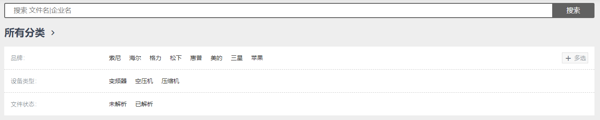
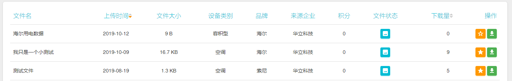
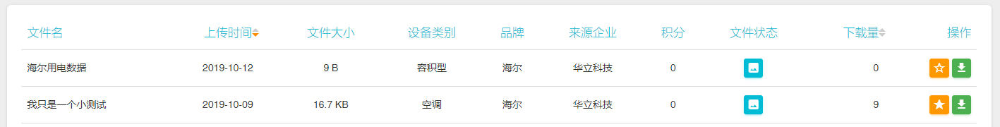
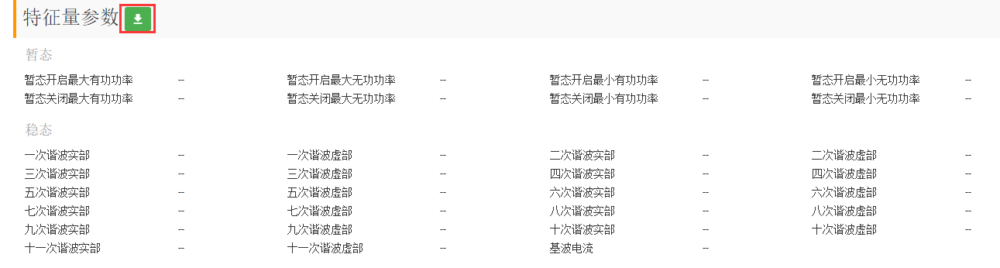

查看文件
文件筛选搜索
需要找指定品牌、设备类型或者指定的文件，可以通过页面顶部的品牌和设备类型选择栏进行筛选，可以通过顶部搜索框进行文件名/企业名关键词搜索。

文件概览
在文件库菜单栏中，可以查看所有上传的原始文件列表。列表中有基本信息：文件名、上传时间、文件大小、设备类别、品牌、来源企业、文件状态、下载量，以及收藏下载操作。

查看文件详情
点击想要查看的文件，进入文件详情页，可以查看文件中数据来源的电器参数和采集设备参数。
如果文件已解析，还会展现解析相关参数。
收藏下载
收藏文件
-
在文件列表中对应文件的
操作栏里，点击按钮，对该文件进行收藏。
-
在文件详情页面，点页面右上角的
 按钮，对该文件进行收藏。
按钮，对该文件进行收藏。
下载文件
a. 下载原始文件
-
在文件列表中对应文件的
操作栏里，点击按钮，再选择保存路径，对该文件进行下载。 -
在文件详情页面，点击文件名下方的按钮，再选择保存路径，对该文件进行下载。
b. 下载特征文件
在文件详情页面，在下方特征量参数右边点击按钮，即可下载特征文件。（只有已解析的文件才有特征量参数）

上传文件
点击顶部导航右侧的，进入上传页面。
-
选择文档
从本地选择需要上传的文档（只支持
.txt、.mat格式文件），点击下一步。
-
填写信息
填写文档标题、电器参数、采集设备信息、其他备注信息后，点击
开始上传。 -
文件上传
文件成功上传后会有提示信息。此时，点击下方的
查看已上传文档将会进入个人中心查看已上传的文档列表。点击继续上传则可以进行下一个文档的上传流程。
个人中心
点击页面右上角按钮，出现个人中心和退出，选择个人中心进入个人中心页面，可以查看当前账号的积分数、上传的文件数、被下载的次数。还能查看当前用户上传的文件（我的上传）、当前用户收藏的文件（我的收藏），以及当前用户的积分记录（我的积分）。

退出登录
点击页面右上角按钮，出现个人中心和退出，点击退出，退出当前账号，返回登录页面。